仕上げて発表しよう 〜自分だけの作品に〜
🎯 この章でできるようになること
- タイトル・ゲームオーバー・クリアの画面（シーン）を作って、ゲームの始まりと終わりを作れる
- 画面に操作説明を出して、遊び方が伝わるゲームにできる
- 自分のゲームを良くするための「仕上げ計画」を立てられる
- これまで覚えたことを組み合わせて、自分で新しいしかけを作れる
- 人に遊んでもらって、意見をもとにゲームを直せる
- 自分の作品の「こだわり」と「工夫」を、人に伝えられる
※ 第5章までが終わっていない人も大丈夫。
今日は「できているところまで」を自分の作品として仕上げて発表します。
ゾンビをたおすしくみがなくても、街を歩いたりトラックを運転したりできれば立派な作品だよ。
第5章が終わっていない人は、6-2 ではタイトルの画面（手順1〜3と手順7）と操作説明（手順8）だけ作ればOK。
6-1. 今日の進め方
まず全員で「画面づくり」をしてから、自分の仕上げに進む。
「作る → 遊んでもらう → 直す」を何回まわせるかが、作品の完成度を決める
6-2. タイトル・ゲームオーバー・クリアの画面を作ろう
今のゲームは、いきなり街から始まって、やられるとすぐ最初にもどります。
ゲームらしくするために、「始まり」と「終わり」の画面を作ります。
ここは全員が必ずやる作業です。
自分の仕上げ（6-3 から）は、これが終わってから始めよう。
R を押すと Game Scene からもう一度、T を押すと Title にもどる
今までは「Game Scene」という1つのシーンだけで作ってきました。
タイトル・ゲームオーバー・クリアの画面を、それぞれ別のシーンとして作り、「シーンを変更する」で切りかえます。
オブジェクトはシーンごとに別々なので、新しいシーンでは文字もあらためて作ります。
左上の「≡」（メニュー）を押して、プロジェクトマネージャーを開きます。
「シーン」の右の「＋」を押すと、新しいシーンができます。
できたシーンの「⋮」→「名前の変更」で、名前を Title にします。
同じように、GameOver と Clear も作ります。
第5章で Clear を作った人は、Title と GameOver の2つだけでOK。
シーンを開くときは、シーンの「⋮」→「シーンエディタを開く」を使います。
イベントを作るときは、「⋮」→「イベントシートを開く」です。
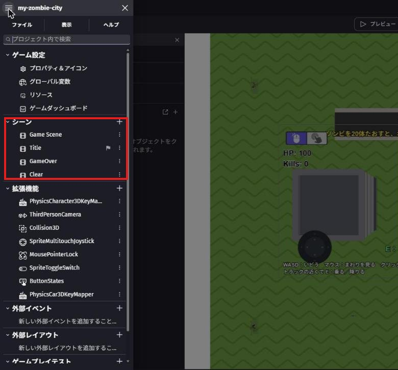
右の「＋」で Title・GameOver・Clear を足す。
Title の横の旗マークは、このあと手順7で付けるもの
Title のシーンを開きます。
右下の「レイヤー」のパネルのいちばん下にある「背景色」の四角を押して、こい紺色にします。
「＋」→「オブジェクトの新規作成」→「テキスト」で、次の3つの文字を作ります。
| オブジェクト名 | テキスト | 見た目 |
|---|---|---|
TitleText | ZOMBIE CITY | フォントサイズ 96、黄色、太字 |
InfoText | 遊び方（下の文をコピー） | 白 |
StartText | Space キーでスタート | 緑 |
街にゾンビがあふれた！
トラックや銃でゾンビをたおそう。
ゾンビを20体たおすと、ボスが出てくる。
ボスをたおせばクリア！
WASD：いどう マウス：まわりを見る クリック：うつ
トラックの近くで E：乗る／降りる色は、左のプロパティの「色」の欄で決めます（第2章の TruckHintText と同じ）。
黄色なら 255;235;80、緑なら 120;255;160、白なら 255;255;255 がおすすめ。
3つの文字を、画面のはんい（四角い線）の中に、写真のように上から並べます。
InfoText と StartText の大きさは、写真を見ながら自分で決めてOK。
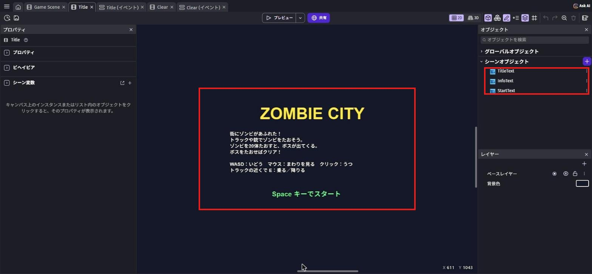
TitleText・InfoText・StartText（右の赤枠）を、画面のはんい（まん中の赤枠）に並べる
プロジェクトマネージャーで Title の「⋮」→「イベントシートを開く」を押して、「Title (イベント)」のタブを開きます。
「+ 新しいイベントを追加」を押して、イベントを作ります。
条件は「キーが押された」（入力 › キーボード）で、チェックするキーは Space。
アクションは「シーンを変更する」で、新しいシーンの名前は一覧から「Game Scene」。
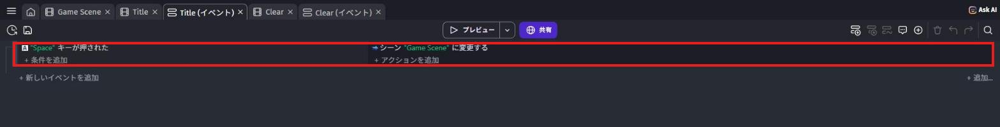
GameOver のシーンを開いて、背景色をこい赤にします。
テキストを2つ作ります。
| オブジェクト名 | テキスト | 見た目 |
|---|---|---|
GameOverText | GAME OVER | 赤、大きく、太字 |
RetryText | R：もう一度あそぶ T：タイトルへ | 白 |
R：もう一度あそぶ T：タイトルへ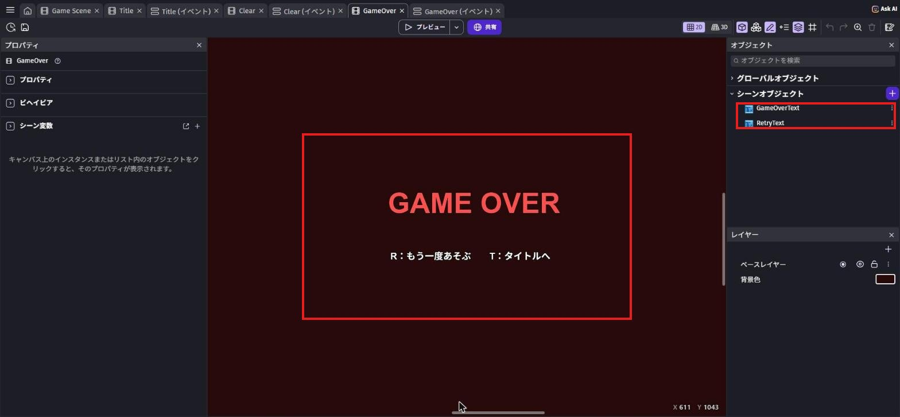
GameOverText と RetryText（右の赤枠）を並べる
「GameOver (イベント)」を開いて、イベントを2つ作ります。
- 「キーが押された」でキーは
r→「シーンを変更する」で「Game Scene」（もう一度あそぶ） - 「キーが押された」でキーは
t→「シーンを変更する」で「Title」（タイトルへ）
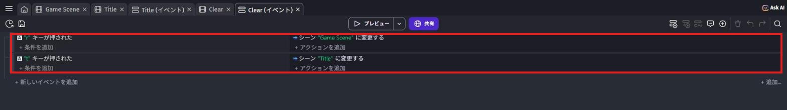
GameOver と Clear は、同じイベントにする。
写真は「Clear (イベント)」のタブで撮ったもの
Clear のシーンを開いて、背景色をこい緑にします。
テキストを3つ作ります。
| オブジェクト名 | テキスト | 見た目 |
|---|---|---|
ClearText | CLEAR! | 黄色、大きく、太字 |
ClearInfoText | ボスをたおして、街を守った！ | 白 |
RetryText | R：もう一度あそぶ T：タイトルへ | 白 |
「Clear (イベント)」には、GameOver と同じ2つのイベント（R と T）を作ります。
GameOver (イベント) の2つのイベントをコピーして、Clear (イベント) に貼りつけてもOK。
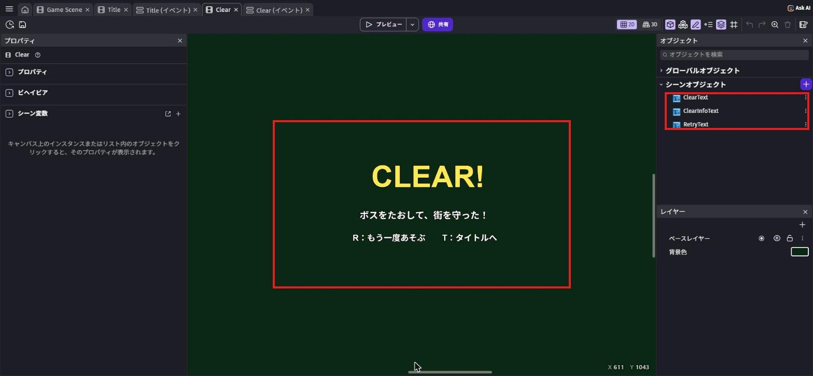
ClearText・ClearInfoText・RetryText（右の赤枠）を並べる
上のタブで「Game Scene (イベント)」を開きます。
Battle グループのいちばん下、「変数 PlayerHealth ≤ 0」のイベントの「シーン "Game Scene" に変更する」をダブルクリックします。
新しいシーンの名前を「GameOver」に変えて「OK」を押します。
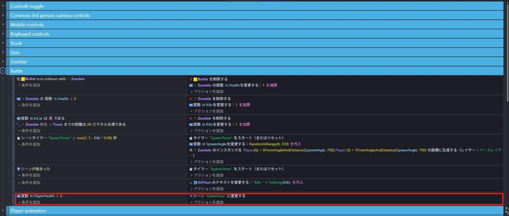
今のままだと、ゲームは Game Scene から始まります。
プロジェクトマネージャーで Title の「⋮」を押して、「スタートシーンとして設定」を選びます。
Title の横に旗のマークがつけば、ゲームは Title から始まります。
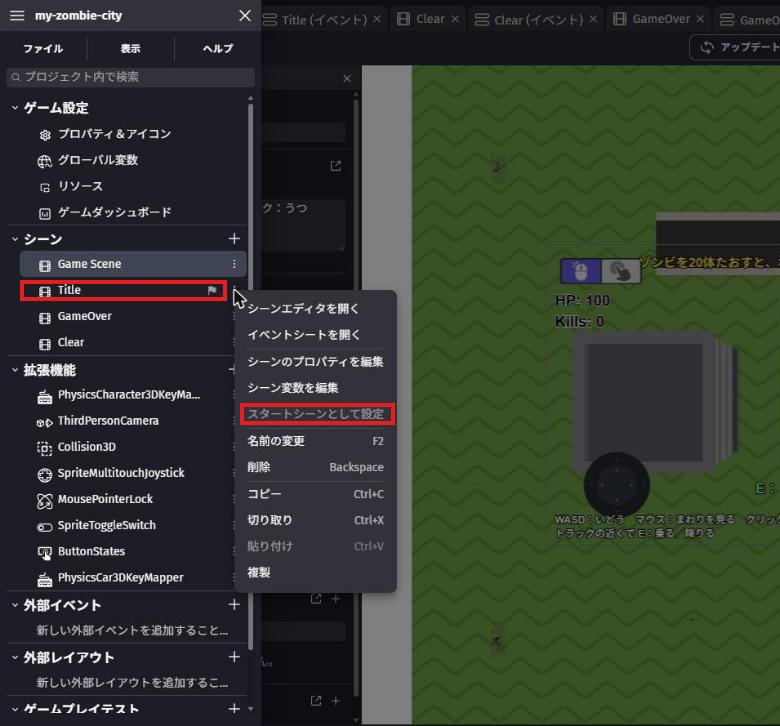
写真ではもう設定ずみなので、文字がうすくなっていて、Title の横に旗マークがついている
「Game Scene」のタブにもどります。
遊ぶ人がすぐわかるように、画面の左下に操作説明を出します。
「＋」→「オブジェクトの新規作成」→「テキスト」で、GuideText を作ります。
左のプロパティで、テキストを下の2行、太字を ON、フォントサイズを 24、色を 255;255;255（白）にします。
WASD：いどう マウス：まわりを見る クリック：うつ
トラックの近くで E：乗る／降りるレイヤーパネルで UI に●をつけてからシーンに置き、X を 20、Y を 640 にします。
最後に、●を「ベースレイヤー」にもどしておこう。
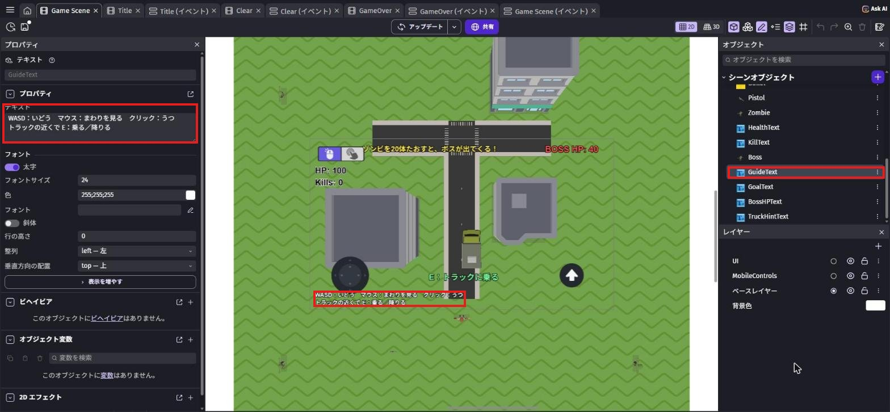
保存してから、Title のシーンを開いて「プレビュー」を押します。
プレビューは、今開いているシーンから始まることがあります。
タイトルから確かめたいときは、Title のシーンを開いてからプレビューしよう。
次のように動けば完成です！
- タイトルの画面で
Spaceを押すと、ゲームが始まる - HP が 0 になると、GAME OVER の画面になる
- ボスをたおすと、CLEAR! の画面になる
- GAME OVER と CLEAR! の画面で、
Rでもう一度、Tでタイトルにもどる
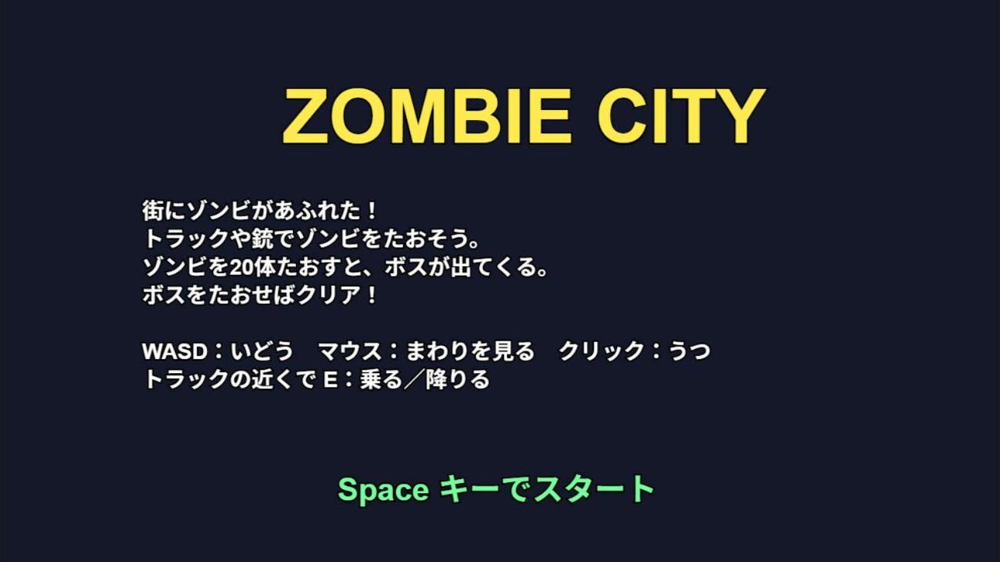
Space でスタート
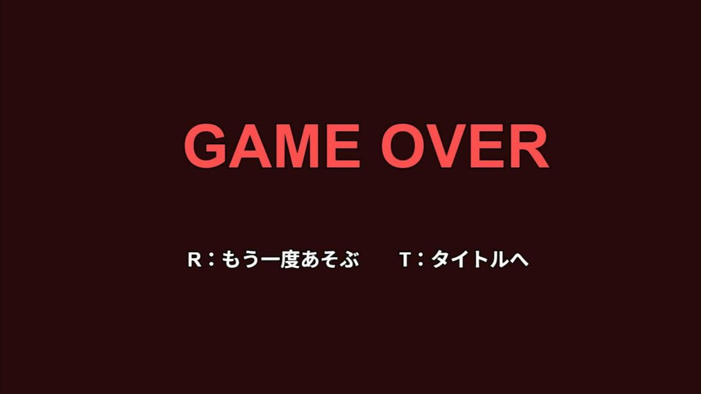
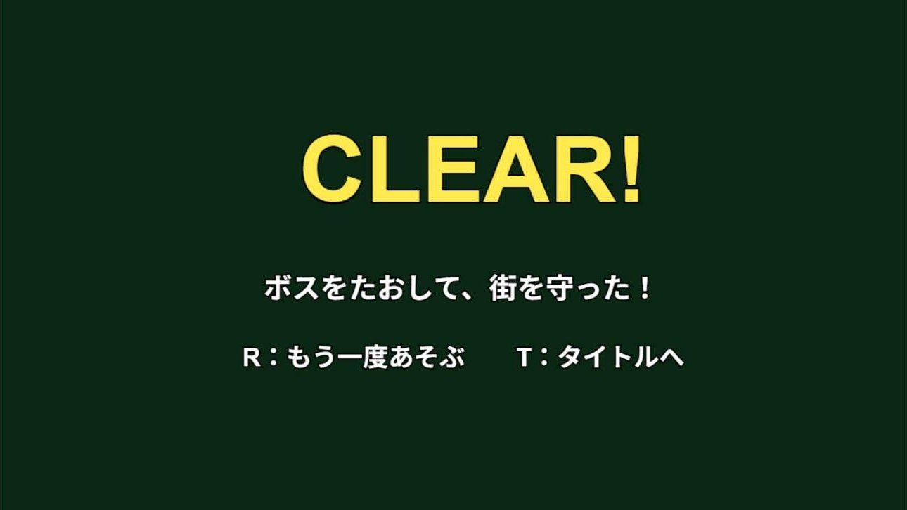
6-3. 仕上げ計画を立てよう
まずは、今日やりたいことを紙に書き出そう。
ポイントは、「絶対やること」と「時間があればやること」を分けること。
欲ばって全部やろうとすると、発表のときに動かない……ということになりがちです。
アイデア一覧（★が多いほどむずかしい）
| アイデア | むずかしさ | 使う知識（復習する章） |
|---|---|---|
| 道路や建物をふやして、街を広げる | ★ | 第1章 |
| 建物にぶつかるようにする（下のワザ1） | ★ | 第2章（ビヘイビア） |
| 撃つときに音を鳴らす（下のワザ2） | ★ | 第3章 |
| タイトルやクリアの画面の色・文字をかざる | ★ | 6-2 |
| ゾンビやボスの強さ・出てくる速さを調整する（下のワザ4） | ★★ | 第4章・第5章 |
| ほかの銃・ゾンビ・ボスに入れかえる（アセットの交換） | ★★ | 第1章・第3章・第4章 |
| クリアまでにかかった時間を画面に出す | ★★★ | 第5章（タイマーと文字） |
課題1: 自分の「仕上げ計画」を書こう
次の3つを紙に書こう。
書けたら講師に見せてから、作業スタート！
- 絶対やること（1〜2個）
- 時間があればやること（1〜3個）
- このゲームのいちばんのこだわり（ひとこと）
ヒントを見る
「絶対やること」は、30分くらいで終わりそうなものにしよう。
迷ったら、今までの章で友だちや講師に遊んでもらったときの意見を思い出してみて。
遊んだ人が困っていた場所を直すのも、立派な仕上げだよ。
6-4. 仕上げに使えるワザ集
ここからは、仕上げでよく使うワザを紹介します。
全部やる必要はありません。
自分の計画に必要なものだけ使おう。
ワザ1: 建物にぶつかるようにする
今のままだと、主人公もトラックも建物をすりぬけてしまいます。
シーンエディターで一覧の Large_Building_B をクリックし、左の「ビヘイビア」の「＋」を押します。
物理 で検索して「3D物理エンジン」を選びます。
つけたら、ビヘイビアの欄に「Physics3D」という見出しで出てきます（ここは英語のまま）。
Physics3D の「Type」を「ダイナミック」から「スタティック」（動かない）に変えます。
Small_Building_B にも同じようにつけよう。
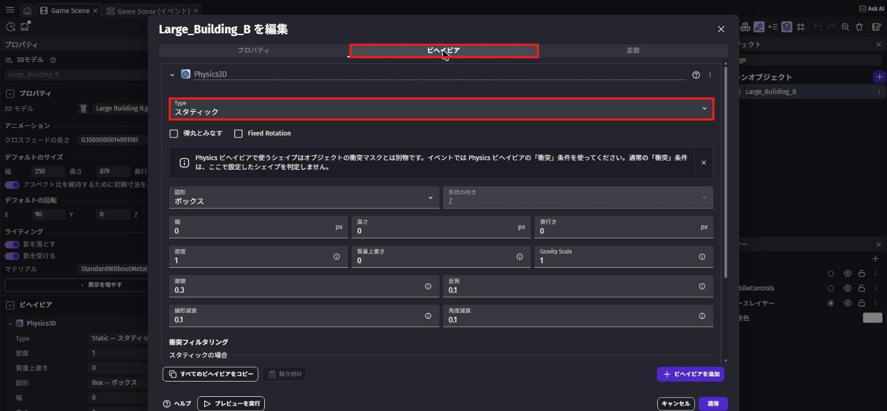
プレビューで建物に向かって歩くと、かべの前で止まります。
ゾンビは力（フォース）で動いているので、建物をすりぬけたままです（ゾンビらしい、ということにしておこう）。
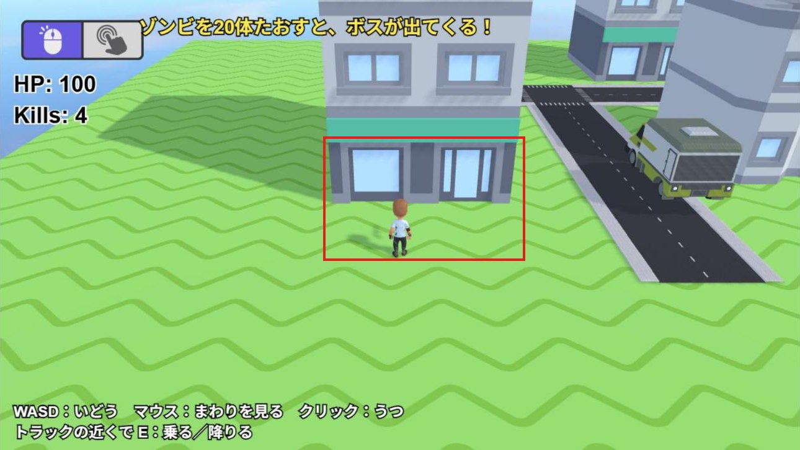
「スタティック」は、ぜったいに動かない物。
建物や地面はスタティックにします。
ダイナミックのままだと、トラックでぶつかったときに建物がふっとんでしまいます。
ワザ2: 撃つときに音を鳴らす
イベントシートの Gun グループで、弾を撃つイベント（左クリックをはなした）の「アクションを追加」を押します。
サウンド で検索して、いちばん上の「サウンドを再生する」（オーディオ › サウンドと音楽）を選びます。
「使用するオーディオファイルを選択してください」の欄をクリックすると、メニューが出ます。
「アセットストアから選択」を押そう。
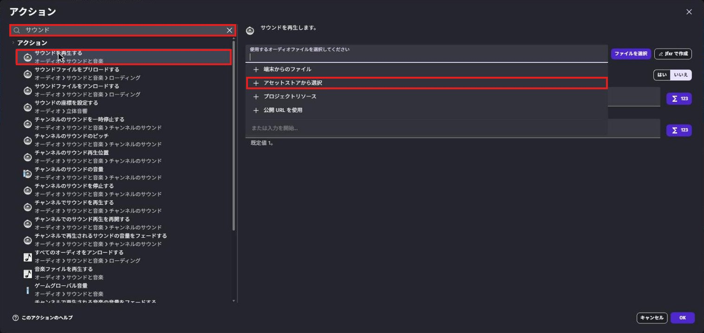
「新しいリソース」の画面が開きます。
検索欄に laser と入力すると、レーザー銃の音がたくさん出てきます（音の名前は英語なので、英語で検索します）。
左の ▷ を押すと、音をためしに聞けます。
気に入った音（写真では「Laser-weapon 1」）を選んで「プロジェクトに追加」を押します。
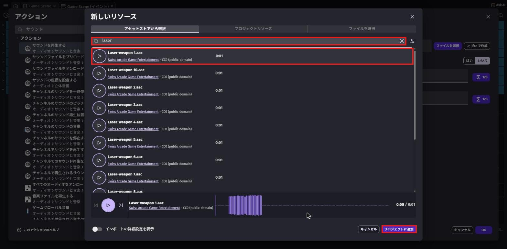
laser で検索 → 音を選んで「プロジェクトに追加」（赤枠）もとの画面にもどったら、「音量」に 50 と入れて「OK」。
撃つたびに音が鳴るようになります。
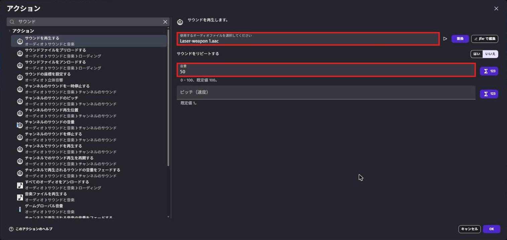
50（赤枠）音を選ぶときは「ライセンス」も見よう
音の名前の下に「CC0 (public domain)」や「CC-BY 4.0」と書いてあります。
CC0 は自由に使える素材です。
CC-BY は、使うときに作った人の名前（クレジット）を書く約束がある素材です。
まよったら CC0 のものを選ぼう。
ワザ3: 街を広げる・ゾンビの種類をふやす
道路は「Zombie Apocalypse」、建物は「City Kit (Commercial)」のパックから、第1章と同じやり方で追加して、コピー＆貼りつけでふやせます。
建物をふやしたら、ワザ1の Physics3D も忘れずに。
ほかのゾンビにしたいときは、一覧の Zombie を右クリック →「アセットの交換」で見た目だけ入れかえられます。
Boss も同じように入れかえられます。
イベントはそのまま使えるので、こわれません。
ワザ4: 数字を変えて、むずかしさを調整する
むずかしさは、次の数字を変えると調整できます。
1つ変えたら、プレビューで遊んで確かめよう。
| 変えたいこと | 変える場所 | 今の値 |
|---|---|---|
| ボスが出るまでの数 | シーン変数 Goal | 20 |
| ゾンビの強さ | Zombie グループの 12 * TimeDelta() | 12 |
| 出現の速さ | SpawnTimer の max(1, 3 - Kills * 0.08) | 3秒→1秒 |
| ボスの体力 | Boss のオブジェクト変数 Health | 40 |
| ボスの強さ | Boss グループの 35 * TimeDelta() | 35 |
Goal を変えたときは、GoalText と、タイトルの InfoText の「20体」も同じ数に直そう。
6-5. テストプレイしてもらおう
ある程度できたら、となりの人と交換して遊んでもらおう。
遊んでもらうときは、作った人は説明しないで、だまって見ているのがコツです。
説明しないとわからない部分は、ゲームの中でわかるように直すべき部分だからです。
| 遊んだ人に聞くこと | メモ |
|---|---|
| 遊び方は、説明なしでわかった？ | |
| むずかしすぎた場所・かんたんすぎた場所は？ | |
| いちばん楽しかったところは？ | |
| バグ（おかしな動き）はあった？ |
課題2: もらった意見で1か所以上直そう
テストプレイでもらった意見の中から、1つ選んでゲームを直そう。
直したら、もう一度遊んでもらって「良くなった？」と聞いてみよう。
ヒントを見る
「むずかしすぎる」と言われたら、ゾンビをおそくする・わく間かくを長くする・HP のへり方をゆっくりにする、など直し方はいろいろ。
どこの数字を変えればいいかは、ワザ4の表を見よう。
全部の意見に従う必要はないよ。
自分の「こだわり」とぶつかる意見は、取り入れなくてもOK。
6-6. 発表の準備をしよう
発表では、ゲームを遊んで見せながら、次の順番で話すと伝わりやすくなります。
1人の持ち時間は講師が伝えます。
| 順番 | 話すこと | 例 |
|---|---|---|
| 1 | ゲームの名前 | 「〇〇〇という名前のゲームです」 |
| 2 | どんなゲームか・遊び方 | 「ゾンビを20体たおすとボスが出てきて、ボスをたおすとクリアのゲームです。トラックでひくこともできます」 |
| 3 | いちばんのこだわり | 「建物をふやして、本物の街っぽくしました」 |
| 4 | 苦労したこと・どう解決したか | 「トラックに乗っている間もHPがへるバグがあって、InCar の条件を足して直しました」 |
| 5 | 次にやってみたいこと | 「ステージを2つにして、2つ目はもっと強いボスにしたいです」 |
課題3（チャレンジ）: 「苦労したこと」を具体的に話そう
発表の4番目「苦労したこと・どう解決したか」を、どんなイベントを、どう直したかまで具体的に話そう。
聞いている人が「自分も同じところでつまずくかも」と思えたら大成功。
ヒントを見る
失敗の話は、発表でいちばん役に立つ部分です。
つまずきポイント集で読んだことや、AIに相談したことを思い出してみよう。
「最初は〇〇だと思ったけど、実は△△だった」という話し方をすると伝わりやすいよ。
6-7. 作品の公開について（任意）
GDevelopには、作ったゲームをインターネットで遊べるように公開する機能があります。
画面の上の真ん中にある「共有」ボタンを押すと、公開のしかたを選ぶ画面が開きます。
いちばん上の「gd.games」（とっても簡単）を使うと、遊べるURLが作れます。
公開すると、家族や友だちにURLを送って遊んでもらえます。
ただし、公開は講師の確認が終わってからにしてください。
- ゲームの中やタイトル・説明文に、本名・学校名・住所などを書かない
- アセットストアの無料素材や自分で作った素材だけを使っているか、もう一度確認する
- この教科書で使った「Zombie Apocalypse」（Quaternius）、「City Kit」（Kenney）、「Survivor Male B」（Kenney）、効果音は CC0 なので、クレジットは書かなくてもOK。
自分で CC-BY の素材を追加したときは、作った人の名前（クレジット）をゲームの中や説明文に書く - 公開するかどうかは、保護者の方とも相談して決める
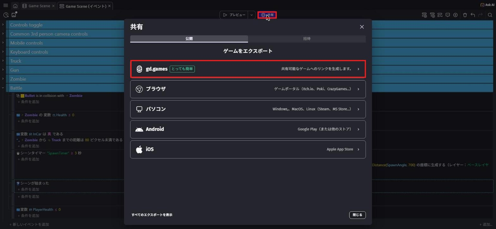
6-8. この先の3つの道
全6回の導入はこれでおしまい。
ここから先は、自分で進む道を選びます。
どの道を選んでも、この6回で身につけた「条件 → アクションで考える力」と「自分で原因を探して直す力」が土台になります。
どれを選んでもOK。
大事なのは「自分が何を作りたいか」
| 道 | こんな人に向いている |
|---|---|
| 道1 GDevelopでオリジナル制作 | 今日のゲームをもっと大きくしたい人、まったく新しいゲームを作りたい人 |
| 道2 ほかの技術を自分で学ぶ | Unity・Webサイト・プログラミング言語など、気になる技術がある人 |
| 道3 講師と生成AIで調べながら作る | 作りたいものはあるけど、どの技術を使えばいいかわからない人 |
次の講習までに、どの道を選ぶか、そしてその理由を考えてきてください。
まだ決められない人は、「作ってみたいもの」をひとつ考えてくるだけでもOKです。
6-9. 🚨 つまずきポイント集
プレビューしても、タイトルから始まらない
原因1: プレビューは、今開いているシーンから始まることがある。
→ Title のシーンを開いてから「プレビュー」を押そう。
原因2: スタートシーンが Title になっていない。
→ 6-2 の手順7のとおり、Title の「⋮」→「スタートシーンとして設定」を選んで、旗マークがつくか確かめよう。
Space・R・T を押しても画面が変わらない
原因: イベントを、別のシーンのイベントシートに作ってしまった。
直し方: 上のタブの名前が「Title (イベント)」「GameOver (イベント)」「Clear (イベント)」になっているか確かめよう。
Title の文字が出ているときは、Title (イベント) のイベントが動きます。
やられても GAME OVER の画面にならない
原因: Battle グループのいちばん下が「シーン "Game Scene" に変更する」のまま。
直し方: 6-2 の手順6のとおり、新しいシーンの名前を「GameOver」に変えよう。
タイトルやゲームオーバーの文字が見えない
原因: 文字の色が、背景の色と同じような暗い色になっている。
直し方: 文字をクリックして、左のプロパティの「色」を黄色や白などの明るい色にしよう。
いろいろ変えていたら、急にゲームがおかしくなった
原因: 最後に変えたところが原因のことがほとんど。
直し方: まず Ctrl + Z⌘ + Z で1つずつ戻して、どこで直るか確かめよう。
これからは「1つ変えたらプレビューで確認」をくせにしよう。
発表の直前に、新しいことを始めて壊れた
原因: 時間ギリギリの大きな変更。
直し方: 発表の15分前からは、新しいしかけを作るのはやめて、テストプレイと発表練習だけにしよう。
Ctrl + S⌘ + S の保存も忘れずに。
建物にぶつかるようにしたら、トラックがとまってしまう
原因: トラックや道路が、建物と重なる場所に置いてある。
直し方: シーンエディターで、建物とトラック・主人公が重なっていないか確かめよう。
重なっていたら、建物を少し動かそう。
音が鳴らない
原因1: PC やブラウザの音量が0、またはミュートになっている。
→ 右下の音量や、ブラウザのタブのスピーカーのマークを確かめよう。
原因2: 「サウンドを再生する」を、撃つイベントではないイベントに入れてしまった。
→ 「左クリックをはなした」の条件があるイベントに入っているか確かめよう。
💡 15分たっても直らないときは、次の「AIを味方につけよう」の方法で相談してみよう。
発表の日は時間が限られているので、早めに講師を呼ぶのもアリです。
6-10. 🤖 AIを味方につけよう
最終回のAIの使い方は、「作品をもっと良くするための相談相手」。
ただし、作品と発表の主役はキミです。
この章でのAIの使い所
✅ 良い使い方 — 自分で考えたものを、もっと良くするために聞く
- 発表原稿のチェック: 自分で書いた原稿を見せて、わかりにくいところを指摘してもらう
- この先の道の相談: 自分の興味を伝えて、どんな技術があるか教えてもらう（選ぶのは自分）
そのままコピペで使えるプロンプト（AIへの指示文）の例:
GDevelopで作った3Dアクションゲームの発表原稿を書きました。
書き直さずに、「聞いている人にわかりにくいところ」を3つだけ指摘してください。
（ここに自分の原稿をはりつける）
次は「〇〇〇（作ってみたいもの）」を作ってみたいです。
どんな技術や道具があるか、中学生でも始めやすい順に3つ教えてください。
それぞれの良いところと大変なところも教えてください。
🚫 やめておこう
- 発表原稿をAIにまるごと書いてもらう（自分の言葉で話すから、作品の良さが伝わる！）
- 「どの道を選ぶか」をAIに決めてもらう（AIは情報をくれるけど、決めるのはキミ）
- AIの答えを試して確かめずに信じる（AIは古いGDevelopの画面の話をすることもある。
必ず自分の画面で確認）
6-11. ✅ チェックリスト
全部チェックできたら、3Dアクション編 完全クリア！
🎉 スターターから、自分の力でゲームを1本に仕上げました。
ここで身につけた力を持って、次の道へ進もう。
6-12. 📚 もっと知りたい人へ
- 公式Wiki「3D physics engine」（英語） — ワザ1の Physics3D のくわしい説明
- 公式Wiki「Audio」（英語） — 効果音や BGM の鳴らし方
- GDevelop公式Wiki — 「Publishing」のページに公開のくわしい説明がある（公開は講師確認後に）
- GDevelop公式サイト — ほかの人が作ったゲームも見つかる